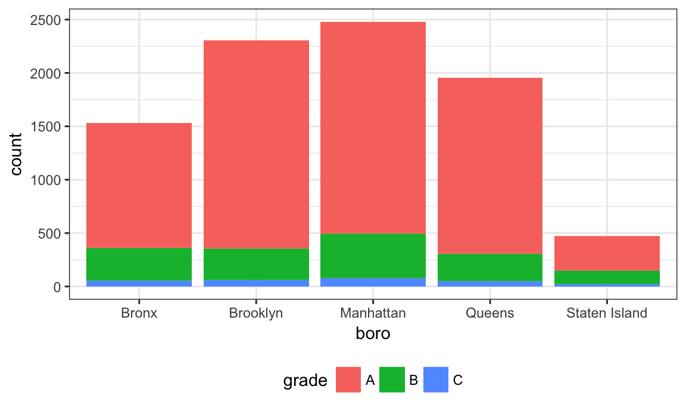
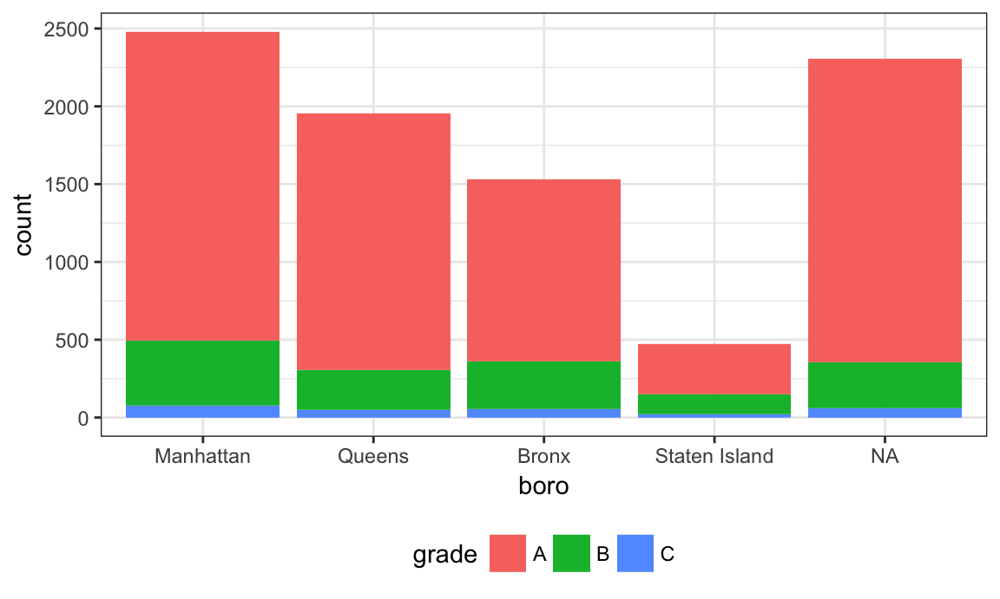
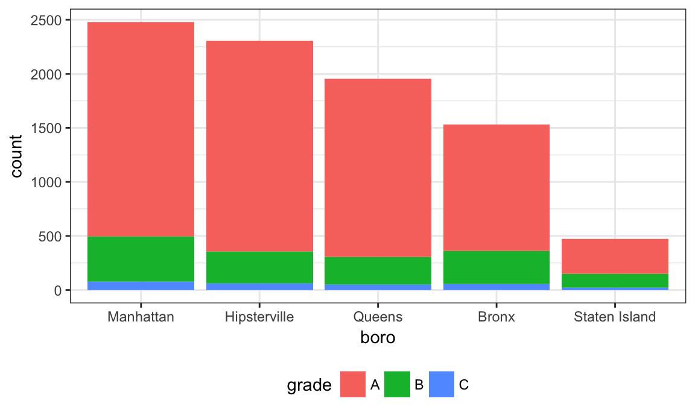

Strings and factors
Most of the tools we examined in Data Wrangling I were general purpose things – what tidy data is, using dplyr and tidyr for manipulation of data tables. Two variable types, strings and factors, present enough challenges to examine in some detail. Now might also be a good time to read up on the history of strings and factors in R!
This is the second module in the Data Wrangling II topic; the relevant slack channel is here.
Example
I’ll write code for today’s content in a new R Markdown document called strings_and_factors.Rmd, and put it in the same directory / GitHub repo as reading_data_from_the_web.Rmd. I’m also going to load the usual packages, as well as stringr and forcats.
library(tidyverse)
## Loading tidyverse: ggplot2
## Loading tidyverse: tibble
## Loading tidyverse: tidyr
## Loading tidyverse: readr
## Loading tidyverse: purrr
## Loading tidyverse: dplyr
## Conflicts with tidy packages ----------------------------------------------
## filter(): dplyr, stats
## lag(): dplyr, stats
library(janitor)
library(haven)
library(rvest)
## Loading required package: xml2
##
## Attaching package: 'rvest'
## The following object is masked from 'package:purrr':
##
## pluck
## The following object is masked from 'package:readr':
##
## guess_encoding
library(stringr)
library(forcats)
theme_set(theme_bw())
theme_update(legend.position = "bottom")Pups data
We’ll start by revisiting a dataset we’ve seen a few times, now. In tidy data we spent some time tidying the pups dataset; as part of that we used tools available to us at the time, but now we have some better tools.
The code below updates the data processing pipeline for the pups data using strignr and forcats. The result is the same, and the differences are pretty small, but this is a bit cleaner.
pulse_data = read_sas("./data/public_pulse_data.sas7bdat") %>%
clean_names() %>%
gather(key = visit, value = bdi, bdiscore_bl:bdiscore_12m) %>%
mutate(visit = str_replace(visit, "bdiscore_", ""),
visit = str_replace(visit, "bl", "00m"),
visit = fct_relevel(visit, str_c(c("00", "01", "06", "12"), "m"))) %>%
arrange(id, visit)
## Warning: attributes are not identical across measure variables;
## they will be dropped
print(pulse_data, n = 12)
## # A tibble: 4,348 x 5
## id age sex visit bdi
## <dbl> <dbl> <chr> <fctr> <dbl>
## 1 10003 48.03836 male 00m 7
## 2 10003 48.03836 male 01m 1
## 3 10003 48.03836 male 06m 2
## 4 10003 48.03836 male 12m 0
## 5 10015 72.47123 male 00m 6
## 6 10015 72.47123 male 01m NA
## 7 10015 72.47123 male 06m NA
## 8 10015 72.47123 male 12m NA
## 9 10022 58.50959 male 00m 14
## 10 10022 58.50959 male 01m 3
## 11 10022 58.50959 male 06m 8
## 12 10022 58.50959 male 12m NA
## # ... with 4,336 more rowsNSDUH
Next we’ll revisit the table scraped from the National Survey on Drug Use and Health data on this page. In reading data from the web, we loaded this data using the code below, but noted it wasn’t tidy.
url = "http://samhda.s3-us-gov-west-1.amazonaws.com/s3fs-public/field-uploads/2k15StateFiles/NSDUHsaeShortTermCHG2015.htm"
drug_use_xml = read_html(url)
table_marj = (drug_use_xml %>% html_nodes(css = "table"))[[1]] %>%
html_table() %>%
.[-1,] %>%
as_tibble()There are a few steps we need to implement to tidy these data. For now I’m not interested in the p-values (I’d rather just see the data); we also have age groups and year ranges in column titles, both of which are, in fact, variables. Lastly, the table includes letters as superscripts next to table entries; if we only want the percents we’ll need to strip these out.
data_marj =
table_marj %>%
select(-contains("P Value")) %>%
gather(key = key, value = percent, -State) %>%
separate(key, into = c("age", "year"), sep = "\\(") %>%
mutate(year = str_sub(year, 1, -2),
percent = str_replace(percent, "[a-z]", ""),
percent = as.numeric(percent)) %>%
filter(!(State %in% c("Total U.S.", "Northeast", "Midwest", "South", "West")))We used stringr and regular expressions a couple of times above:
- in
separate, we split age and year at the open parentheses using"\\(" - to remove character superscripts, we replaced any character using
"[a-z]"
Let’s quickly visualize these data for the 12-17 age group; to make the plot readable, we’ll treat State as a factor are reorder according to percent.
data_marj %>%
filter(age == "12-17") %>%
mutate(State = fct_reorder(State, percent)) %>%
ggplot(aes(x = State, y = percent, color = year)) +
geom_point() +
theme(axis.text.x = element_text(angle = 90, hjust = 1))
Toothbrush reviews
We were able to scrape toothbrush reviews for a single review page in reading data from the web. If we want to scrape more reviews, it’s necessary to construct the URLs for several review pages. This is possible based on an observation about the the structure of the URL for the first page of reviews – it ended with pageNumber=1 and, sure enough, changing this to pageNumber=2 will bring up the second page of reviews.
url_base = "https://www.amazon.com/Philips-Sonicare-rechargeable-toothbrush-HX6211/product-reviews/B00YAR7ZFM/ref=cm_cr_arp_d_viewopt_srt?ie=UTF8&reviewerType=all_reviews&sortBy=recent&pageNumber="
urls = str_c(url_base, 1:5)
read_html(urls[1]) %>%
html_nodes("#cm_cr-review_list .review-title") %>%
html_text()
## [1] "The ONLY brush I use... totally surpasses old-fashioned brushing."
## [2] "Five Stars"
## [3] "Five Stars"
## [4] "Good price"
## [5] "Five Stars"
## [6] "Love it"
## [7] "Does what is sonic toothbrush is supposed to do. ..."
## [8] "I should have looked for a better bargin"
## [9] "Fatter handle than other models"
## [10] "Four Stars"
read_html(urls[2]) %>%
html_nodes("#cm_cr-review_list .review-title") %>%
html_text()
## [1] "Best electric toothbrush in the market, period."
## [2] "Huge upgrade to my old Elite Sonicare. Highly recommended!!"
## [3] "Philips Sonicare 2 Series Plaque"
## [4] "Good Choice!"
## [5] "Five Stars"
## [6] "Five Stars"
## [7] "love"
## [8] "... thought I would spend the money on a toothbrush like this. After buying it"
## [9] "... have had both the Sonicate and Oral B and like this the"
## [10] "Works like exppected"It would get really tedious to try to scrape all (5000+) reviews by copying code over and over; before long we’ll learn about writing R functions to reuse code and make this much easier!
Restaurant inspections
As a final example of strings and factors, we’ll take a look at the NYC Restuarant Inspections data. Although we won’t talk about this in detail now, it’s worth mentioning that these data were collected using the NYC Open Data API; code is available with the data description.
First we’ll import the data and take a look.
nyc_inspections = read_csv("./data/DOHMH_New_York_City_Restaurant_Inspection_Results.csv.gz")
## Parsed with column specification:
## cols(
## action = col_character(),
## boro = col_character(),
## building = col_integer(),
## camis = col_integer(),
## critical_flag = col_character(),
## cuisine_description = col_character(),
## dba = col_character(),
## inspection_date = col_datetime(format = ""),
## inspection_type = col_character(),
## phone = col_character(),
## record_date = col_datetime(format = ""),
## score = col_integer(),
## street = col_character(),
## violation_code = col_character(),
## violation_description = col_character(),
## zipcode = col_integer(),
## grade = col_character(),
## grade_date = col_datetime(format = "")
## )
## Warning in rbind(names(probs), probs_f): number of columns of result is not
## a multiple of vector length (arg 1)
## Warning: 9380 parsing failures.
## row # A tibble: 5 x 5 col row col expected actual expected <int> <chr> <chr> <chr> actual 1 2292 building an integer NKA file 2 3268 building an integer NKA row 3 5321 building an integer NKA col 4 5689 building an integer NKA expected 5 6364 building an integer NKA actual # ... with 1 more variables: file <chr>
## ... ................. ... .................................. ........ .................................. ...... .................................. .... .................................. ... .................................. ... .................................. ........ .................................. ...... .......................................
## See problems(...) for more details.
nyc_inspections %>%
group_by(boro, grade) %>%
summarize(n = n()) %>%
spread(key = grade, value = n)
## # A tibble: 6 x 8
## # Groups: boro [6]
## boro A B C `Not Yet Graded` P Z `<NA>`
## * <chr> <int> <int> <int> <int> <int> <int> <int>
## 1 BRONX 13688 2801 701 200 163 351 16833
## 2 BROOKLYN 37449 6651 1684 702 416 977 51930
## 3 MANHATTAN 61608 10532 2689 765 508 1237 80615
## 4 Missing 4 NA NA NA NA NA 13
## 5 QUEENS 35952 6492 1593 604 331 913 45816
## 6 STATEN ISLAND 5215 933 207 85 47 149 6730To simplify things, I’ll remove inspections with scores other than A, B, or C, and also remove the restaurants with missing boro information. I’ll also clean up boro names a bit.
nyc_inspections =
nyc_inspections %>%
filter(grade %in% c("A", "B", "C"), boro != "Missing") %>%
mutate(boro = str_to_title(boro))Let’s focus only on pizza places for now, and re-examine grades by boro
nyc_inspections %>%
filter(str_detect(dba, "Pizza")) %>%
group_by(boro, grade) %>%
summarize(n = n()) %>%
spread(key = grade, value = n)
## # A tibble: 5 x 3
## # Groups: boro [5]
## boro A B
## * <chr> <int> <int>
## 1 Bronx 9 3
## 2 Brooklyn 6 NA
## 3 Manhattan 26 8
## 4 Queens 17 NA
## 5 Staten Island 5 NAThat doesn’t look right – for sure there are more pizza places than that! The problem is that the match in str_detect is case-sensitive until we tell it not to be:
nyc_inspections %>%
filter(str_detect(dba, regex("pizza", ignore_case = TRUE))) %>%
group_by(boro, grade) %>%
summarize(n = n()) %>%
spread(key = grade, value = n)
## # A tibble: 5 x 4
## # Groups: boro [5]
## boro A B C
## * <chr> <int> <int> <int>
## 1 Bronx 1170 305 56
## 2 Brooklyn 1948 296 61
## 3 Manhattan 1983 420 76
## 4 Queens 1647 259 48
## 5 Staten Island 323 127 21The table is okay but I’d like to visualize this.
nyc_inspections %>%
filter(str_detect(dba, regex("pizza", ignore_case = TRUE))) %>%
ggplot(aes(x = boro, fill = grade)) + geom_bar()
Might help to have things in a different order – maybe number of pizza places? Fortunately this can be done using fct_infreq.
nyc_inspections %>%
filter(str_detect(dba, regex("pizza", ignore_case = TRUE))) %>%
mutate(boro = fct_infreq(boro)) %>%
ggplot(aes(x = boro, fill = grade)) + geom_bar()Suppose I want to rename a boro; I’ll try to do this using replace.
nyc_inspections %>%
filter(str_detect(dba, regex("pizza", ignore_case = TRUE))) %>%
mutate(boro = fct_infreq(boro),
boro = replace(boro, which(boro == "Brooklyn"), "Hipsterville")) %>%
ggplot(aes(x = boro, fill = grade)) + geom_bar()
## Warning in `[<-.factor`(`*tmp*`, list, value = "Hipsterville"): invalid
## factor level, NA generated
That didn’t work at all! Factors have very specific values, trying to use a value that is not an existing factor level won’t work. Fortunately there is a dedicated function for renaming factor levels:
nyc_inspections %>%
filter(str_detect(dba, regex("pizza", ignore_case = TRUE))) %>%
mutate(boro = fct_infreq(boro),
boro = fct_recode(boro, "Hipsterville" = "Brooklyn")) %>%
ggplot(aes(x = boro, fill = grade)) + geom_bar()
Success!
Other materials
- R for Data Science has chapters on both strings and factors
- There are useful materials by Jenny Bryan on strings and factors as well
The code that I produced working examples in lecture is here.